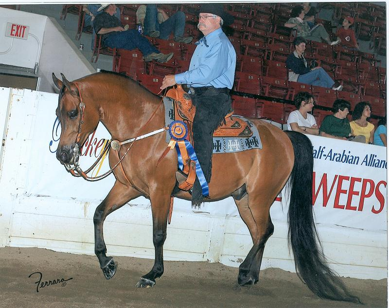
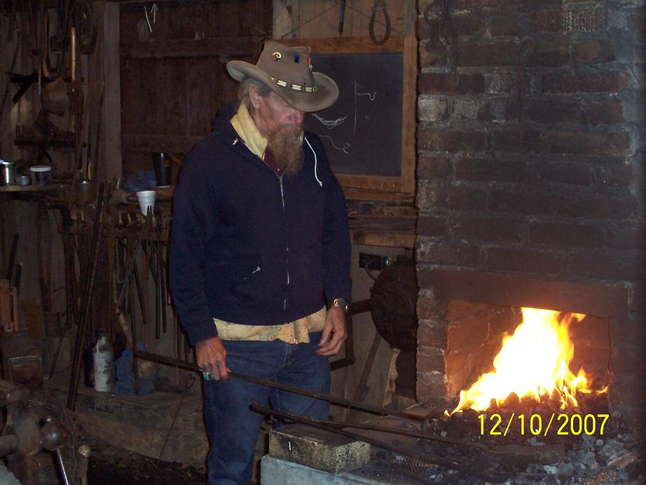

One way in which blacksmiths earn a living is by shoeing horses. Some
blacksmiths also own horses. Below is Charlie Helton riding his horse
which is now in the top ten in the nation. Additionally, there are
some images of the members of the Jennings County Historical Society
Blacksmith Shop.

Proud owner on proud horse

That's a nice forge. Look at how it draws the fire.